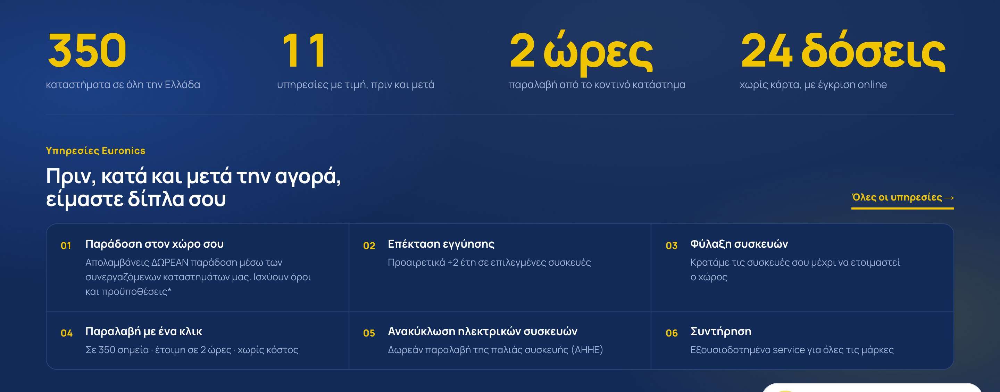
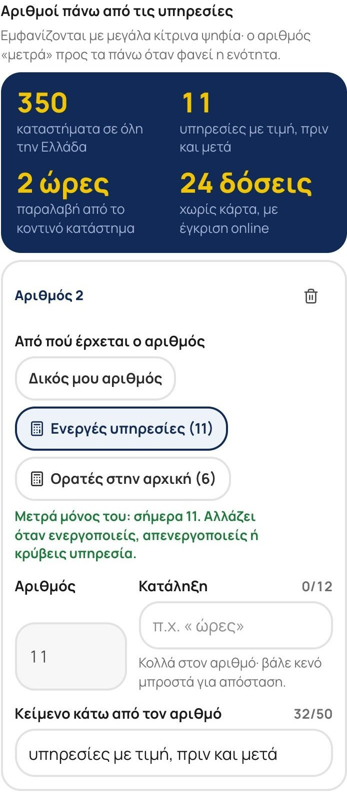
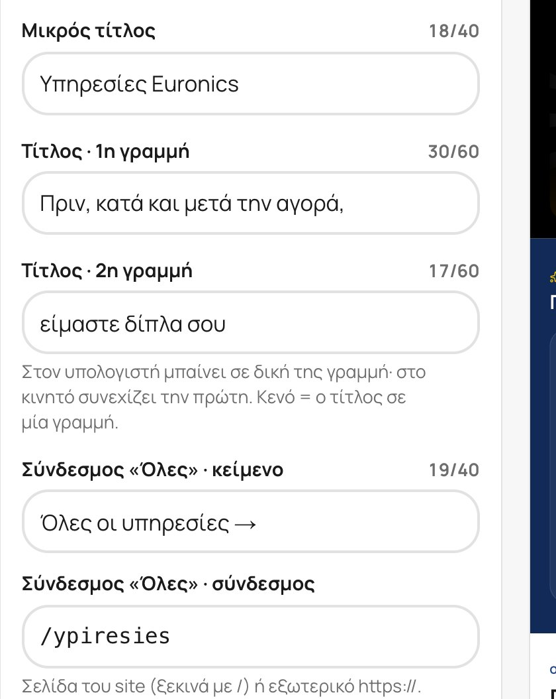
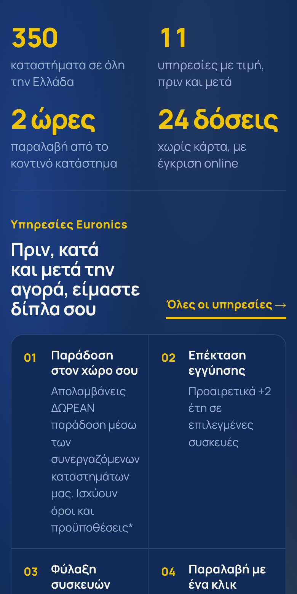

Απαντήσεις στις δύο ερωτήσεις σας για τη σκούρα ζώνη της αρχικής σελίδας: πώς ενημερώνεται ο αριθμός των υπηρεσιών και πώς αλλάζουν τα κείμενά της. Και τα δύο γίνονται από τη διαχείριση, χωρίς τεχνική παρέμβαση.
ΠούΠεριεχόμενο → Ζώνες αρχικής → «Υπηρεσίες»
ΠοιοςΌποιος έχει δικαίωμα επεξεργασίας στις Ζώνες αρχικής
Πότε φαίνεται στο siteΜετά το κουμπί «Δημοσίευση»
Η ενότητα όπως τη βλέπει ο επισκέπτης (υπολογιστής)

1. Ο αριθμός των υπηρεσιών
Ναι
Ο αριθμός μπορεί να ενημερώνεται αυτόματα από τις υπηρεσίες ή να είναι αριθμός που γράφετε εσείς. Το διαλέγετε για κάθε αριθμό της ενότητας ξεχωριστά, στο πεδίο «Από πού έρχεται ο αριθμός».
Δικός μου αριθμόςΓράφετε τον αριθμό στο πεδίο «Αριθμός» και μένει ίδιος μέχρι να τον αλλάξετε. Ταιριάζει σε σταθερούς αριθμούς, όπως τα 350 καταστήματα.
Ενεργές υπηρεσίεςΜετρά τις ενεργές υπηρεσίες του Εμπόριο → Υπηρεσίες. Όταν απενεργοποιείτε ή προσθέτετε υπηρεσία, ο αριθμός αλλάζει μόνος του.Η ρύθμιση του αριθμού υπηρεσιών σήμερα
Ορατές στην αρχικήΜετρά μόνο όσες υπηρεσίες φαίνονται στην ίδια ενότητα της αρχικής (ανοιχτό «μάτι»).
Γιατί ο αριθμός δεν άλλαξε όταν κρύψατε μια υπηρεσία. Με τη ρύθμιση «Ενεργές υπηρεσίες» μετρούν όλες οι ενεργές υπηρεσίες του καταλόγου. Το «μάτι» στις Ζώνες αρχικής κρύβει την υπηρεσία μόνο από τη λίστα της αρχικής: η υπηρεσία μένει ενεργή, έχει τη σελίδα της και πωλείται κανονικά, άρα μετρά. Για να μειωθεί ο αριθμός, έχετε δύο τρόπους:
απενεργοποιήστε την υπηρεσία στο Εμπόριο → Υπηρεσίες, ή
διαλέξτε «Ορατές στην αρχική», ώστε ο αριθμός να ακολουθεί ό,τι φαίνεται στην αρχική.
Η σελίδα «Υπηρεσίες» του site (/ypiresies) μετρά κι αυτή μόνη της τις ενεργές υπηρεσίες στον τίτλο της.
Διαχείριση · ο αριθμός υπηρεσιών (Αριθμός 2)

Αλλάζω πώς μετρά ο αριθμός
Ανοίξτε Περιεχόμενο → Ζώνες αρχικής και πατήστε «Υπηρεσίες» στη λίστα των ενοτήτων.
Στο «Αριθμοί πάνω από τις υπηρεσίες» βρείτε τον αριθμό των υπηρεσιών (Αριθμός 2).
Στο «Από πού έρχεται ο αριθμός» πατήστε τη ρύθμιση που θέλετε. Δίπλα σε κάθε επιλογή φαίνεται τι θα δείξει σήμερα, π.χ. «Ενεργές υπηρεσίες (11)».
Με αυτόματη μέτρηση, το πεδίο «Αριθμός» γκριζάρει και το πράσινο μήνυμα γράφει «Μετρά μόνος του».
Ελέγξτε την προεπισκόπηση δεξιά και πατήστε «Δημοσίευση».
Το σκούρο πλαίσιο στην κορυφή του πεδίου δείχνει πώς θα φαίνονται οι αριθμοί, πριν δημοσιεύσετε.
2. Επεξεργασία όλων των κειμένων της ενότητας
Ναι
Κάθε κείμενο της ενότητας αλλάζει από την ίδια σελίδα: οι τέσσερις αριθμοί με τα κείμενά τους, ο μικρός τίτλος, ο τίτλος σε δύο γραμμές και ο σύνδεσμος «Όλες οι υπηρεσίες».
Στο site
Πεδίο στη διαχείριση
350 καταστήματα σε όλη την Ελλάδα
Αριθμός 1 · Αριθμός «350» · Κείμενο κάτω από τον αριθμό
11 υπηρεσίες με τιμή, πριν και μετά
Αριθμός 2 · μετρά μόνος του (ενότητα 1) · Κείμενο κάτω από τον αριθμό
2 ώρες παραλαβή από το κοντινό κατάστημα
Αριθμός 3 · Αριθμός «2» · Κατάληξη « ώρες» · Κείμενο
24 δόσεις χωρίς κάρτα, με έγκριση online
Αριθμός 4 · Αριθμός «24» · Κατάληξη « δόσεις» · Κείμενο
Υπηρεσίες Euronics
Μικρός τίτλος
Πριν, κατά και μετά την αγορά, / είμαστε δίπλα σου
Τίτλος · 1η γραμμή και Τίτλος · 2η γραμμή
Όλες οι υπηρεσίες →
Σύνδεσμος «Όλες» · κείμενο και · σύνδεσμος
Διαχείριση · τίτλοι και σύνδεσμος

Αλλάζω ένα κείμενο
Περιεχόμενο → Ζώνες αρχικής → «Υπηρεσίες».
Για τους αριθμούς: γράψτε στο Αριθμός, Κατάληξη ή Κείμενο κάτω από τον αριθμό.
Για τον τίτλο: γράψτε στα Μικρός τίτλος, Τίτλος · 1η γραμμή και Τίτλος · 2η γραμμή.
Η προεπισκόπηση δεξιά ενημερώνεται αμέσως, σε «Υπολογιστής» και «Κινητό».
Πατήστε «Δημοσίευση».
Μετρητής χαρακτήρων δίπλα σε κάθε πεδίο δείχνει πόσο χώρο έχετε (π.χ. 30/60).
Καλό να ξέρετε
Έως 4 αριθμοί. Αφαιρείτε έναν με τον κάδο και προσθέτετε με «Νέος αριθμός». Στον υπολογιστή χωρούν 4 σε μία σειρά, στο κινητό 2 ανά σειρά, οπότε 2 ή 4 δίνουν γεμάτες σειρές.
Κατάληξη. Κολλά στον αριθμό. Αφήστε ένα κενό μπροστά της (« ώρες») για να μη γράφει «2ώρες».
Κενό κείμενο. Αριθμός χωρίς κείμενο από κάτω δεν εμφανίζεται. Η 2η γραμμή του τίτλου μπορεί να μείνει κενή: τότε ο τίτλος μπαίνει σε μία γραμμή.
Πρόχειρο. Οι αλλαγές αποθηκεύονται μόνες τους ως πρόχειρο και οι επισκέπτες δεν βλέπουν τίποτα μέχρι τη «Δημοσίευση». Με «Ακύρωση αλλαγών» το πρόχειρο γυρίζει στη δημοσιευμένη αρχική.
Επαναφορά. Το «Επαναφορά στις αρχικές ρυθμίσεις» στο τέλος της ενότητας επαναφέρει αριθμούς, κείμενα και σειρά υπηρεσιών στις αρχικές τους τιμές.
Τίτλοι και περιγραφές των υπηρεσιών (π.χ. «Παράδοση στον χώρο σου») αλλάζουν στο Εμπόριο → Υπηρεσίες, με ισχύ σε όλο το site.
Βοήθεια μέσα στη σελίδα. Το κουμπί «Βοήθεια» πάνω δεξιά ανοίγει τον οδηγό της σελίδας, με το «Αλλάζω τους αριθμούς και τον τίτλο της ενότητας “Υπηρεσίες”» βήμα προς βήμα.
Στο κινητό
Η ενότητα στο κινητό

Οι ίδιοι αριθμοί και τίτλοι εμφανίζονται και στο κινητό, δύο αριθμοί ανά σειρά. Το μέγεθος των ψηφίων προσαρμόζεται μόνο του στο πλάτος της οθόνης, ώστε και ο μακρύτερος (π.χ. «24 δόσεις») να χωρά. Η 2η γραμμή του τίτλου στο κινητό συνεχίζει την πρώτη.